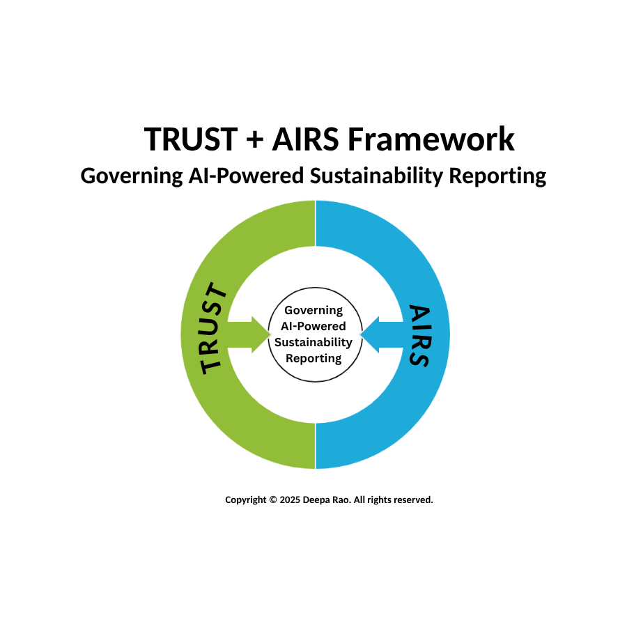

TRUST + AIRS Together
One Unified Governance Vision


Governs What is Disclosed
The content, accuracy, and strategic alignment of ESG reporting. Whether data is traceable, owned, validated, and assurance-ready.
Governs How it is Produced
The AI systems, processes, and controls that generate disclosures. Whether models are owned, tested, explainable, and governed across their lifecycle.
"TRUST + AIRS provide a governance blueprint that enables boards to trust both human and AI-driven sustainability disclosures — by embedding assurance, accountability, and integrity at every stage of reporting."
Regulatory Alignment
TRUST + AIRS complements — it does not replace — existing standards.
Five Outcomes of Deploying TRUST + AIRS Together
One View of Reporting Integrity
A unified view of ESG disclosures and the AI systems behind them — what is assured, what is validated, and what is vulnerable.
Confidence to Approve, Not Just Acknowledge
Move from "best of our knowledge" reliance to real, evidence-based oversight of disclosures.
Early Signals, Fewer Surprises
TRUST + AIRS strengthens oversight before risk becomes reputational damage.
Alignment Across Functions
A shared language across sustainability, audit, risk, compliance, and technology.
Regulatory & Reputational Readiness
Signals to auditors, investors, and stakeholders that the organisation is governance-ready.